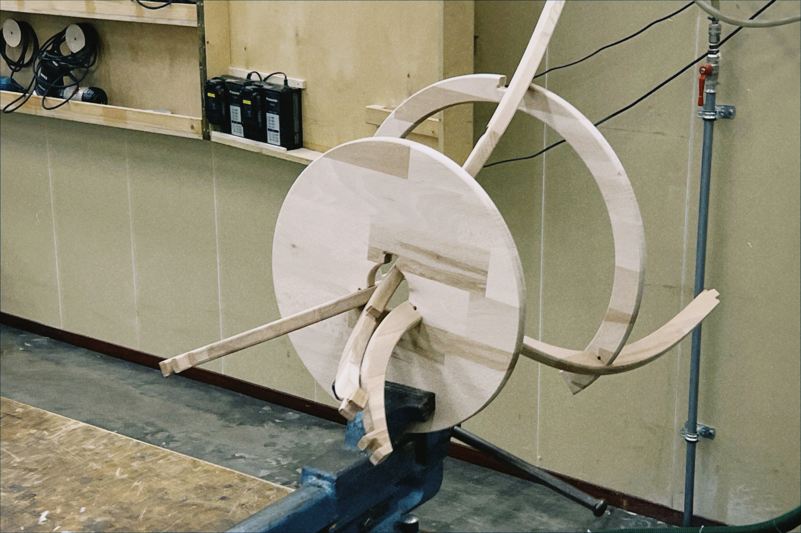
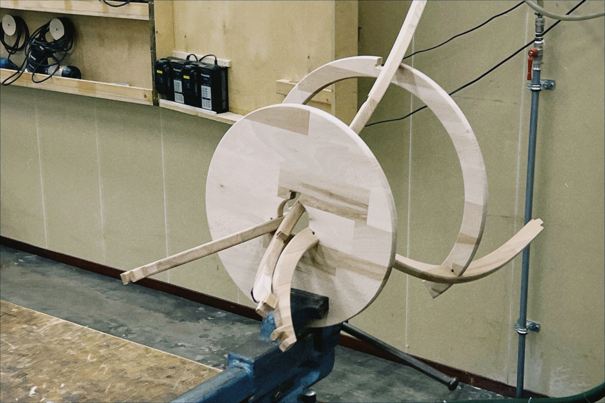

This project employs handcrafted hardwood furniture to address two contemporary societal issues:
-the detachment of practicality in the art world, which traps many works in a cycle of "post-exhibition disposal" and weakens art's capacity for social engagement by divorcing it from daily life;
-and the dominance of industrialized production in consumer culture, where standardized processes strip objects of temporality, reducing human-material relationships to transient, utilitarian transactions.
This ongoing project explores whether everyday objects that combine practical functionality with critical consciousness can persistently provoke reflection on consumerism and artistic institutionalization within lived environments.
Continuum


 
